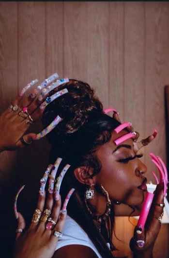

Nail Talk
Hey girl ! Hey ! Lets talk nails with BluePrint Nails By Jas . Jas lives for nails and it shows in her artwork. 3 Words jas describes her personality to be is Blunt,Observant and Loud like her nails lol. Now that is true ! Her work is loud, bold and unique, her creativity is on another level and a perfectionist at it's best. She became a nail tech because she saw thats she could provide something that others couldnt and wanted to make every woman feel pretty amd well serviced. Whether it's the light snacks, wine, girl talk she aims to please.
BluePrint Latest Trend
The latest trend for 2024 in the nail world is 3D design. From the elegant flowers, floral, daisy, abstract so many to name. Jas owner of BluePrint Nails says the latest trent that appeals to her is animal print and frenchtip freestyle. Freestyle is a way to express not only the nail art talent but also the clients boldness.
